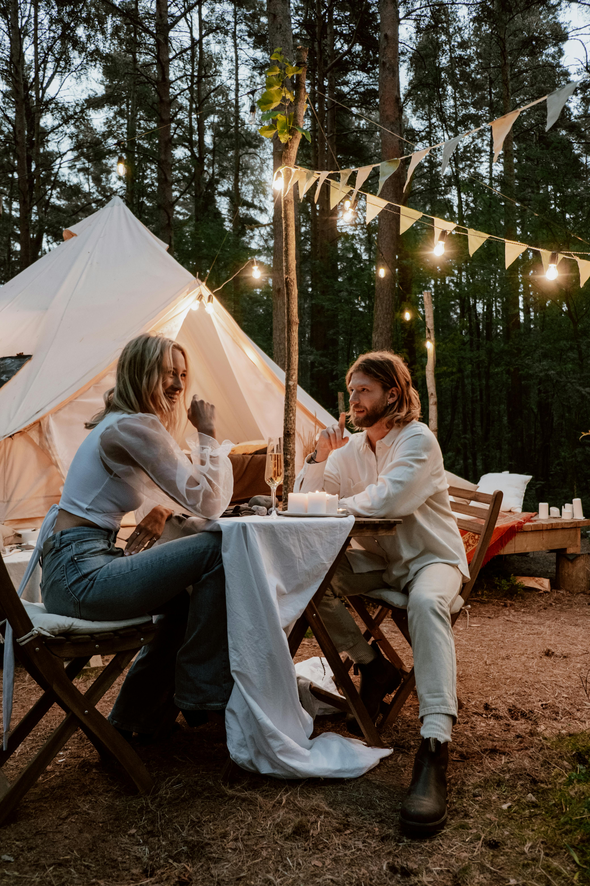
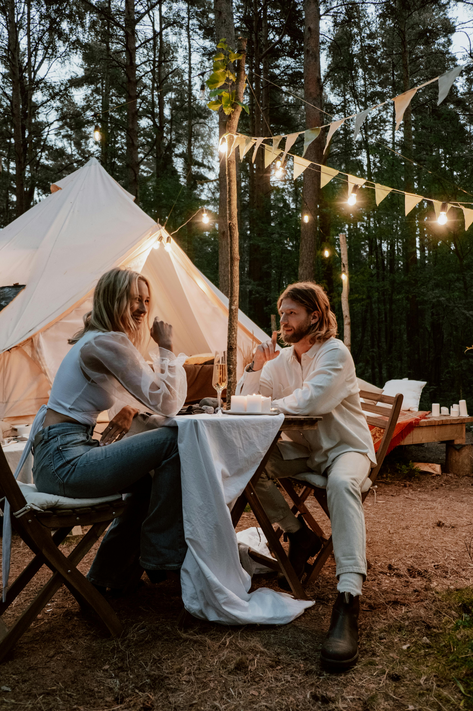

Första dejten - 15 tips på aktiviteter
Publicerad 2024-03-01 11:17
Ibland kan det vara idétorka när det kommer till vad man ska göra på sina dejter, allra svårast kanske är första dejten. Vad vill jag göra? Vad är jag bekväm med att göra tillsammans med en "främling?
 

- Kaffe eller enklare fika: En avslappnad atmosfär på en kafé eller en fik är perfekt för att lära känna varandra och ha en avslappnad konversation.
- Promenad i parken: Ta en promenad i en vacker park, njut av naturen och samtala medan ni går. Det är en avslappnad och intim miljö för en första träff.
- Minigolf: En rolig och avslappnad aktivitet där ni kan ha kul och samtidigt utmana varandra lite.
- Museum eller konstgalleri: Om ni båda är intresserade av konst eller historia kan ett besök på ett museum eller konstgalleri vara både intressant och stimulerande.
- Matlagningskurs: Om ni båda gillar matlagning kan en matlagningskurs vara en rolig och interaktiv aktivitet där ni kan lära er något nytt tillsammans.
- Vinprovning: För de som uppskattar vin kan en vinprovning vara en trevlig och avslappnad aktivitet där ni kan lära er mer om olika viner och njuta av goda smaker tillsammans.
- Biobesök: Att gå på bio är en klassisk dejtaktivitet. Efter filmen kan ni prata om vad ni tyckte om den över en kopp kaffe eller en promenad.
- Picknick i parken: För en mer avslappnad och intim atmosfär kan ni packa en picknickkorg med godsaker och njuta av maten tillsammans i en vacker park.
- Bowling: En rolig och avslappnad aktivitet där ni kan skratta och ha kul tillsammans samtidigt som ni utmanar varandra lite.
- Escape room: Om ni båda gillar utmaningar kan en escape room vara en spännande och rolig aktivitet där ni får samarbeta för att lösa pussel och komma ut ur rummet.
- Matmarknad eller street food-festival: Utforska olika smaker och maträtter på en matmarknad eller street food-festival och prova på olika läckerheter tillsammans.
- Båttur: Om ni har tillgång till en sjö eller hav kan en båttur vara en romantisk och avslappnad aktivitet där ni kan njuta av vackra vyer och varandras sällskap.
- Musik- eller teaterföreställning: Om ni båda gillar musik eller teater kan en föreställning vara en underhållande och minnesvärd aktivitet för er första dejt.
- Trädgårdscentrum eller botanisk trädgård: Ta en promenad bland vackra blommor och grönskande växter på ett trädgårdscentrum eller i en botanisk trädgård och njut av naturen tillsammans.
- Matlunch: Istället för middag kan en lunch vara ett mer avslappnat sätt att träffas för första gången. Välj en mysig restaurang eller café och njut av god mat och samtal.
Hoppas att något av tipsen passar för dig och din dejt!